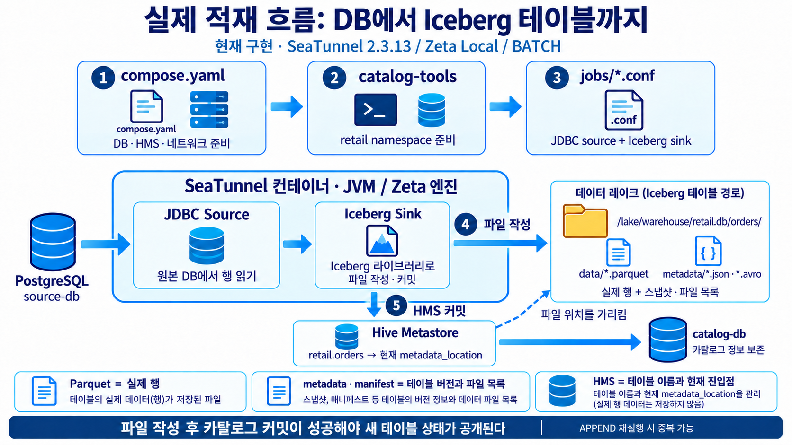
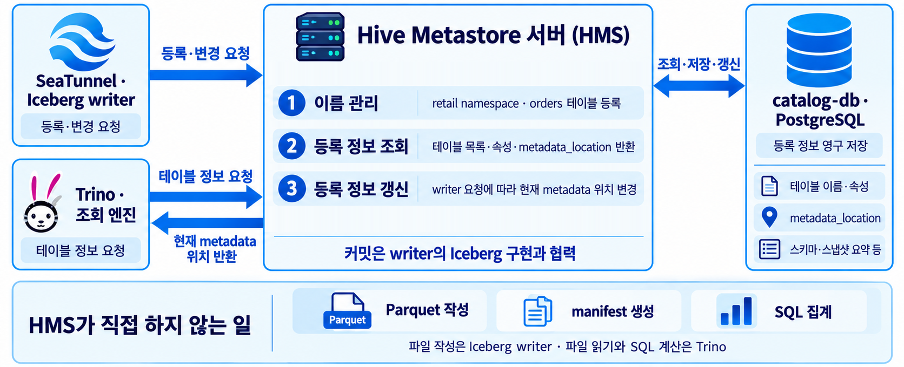

Apache Iceberg를 활용한
데이터 레이크하우스 구축 (로컬 환경)
SeaTunnel · Iceberg · Hive Metastore · Trino · Superset
레이크하우스의 정의 · 네 가지 역할
무엇을 어디에 띄웠고, 원본 DB를 Iceberg로 어떻게 옮겼는가
각자 하는 일과 하지 않는 일 · 카탈로그의 자리
JSON · Avro · Parquet의 관계와 흐름
조회 계층을 붙이고 실제로 읽는다
＋데이터 레이크에서 가져온 것
- 저렴한 오브젝트 스토리지에 파일 그대로 적재전용 시스템에 넣지 않아 용량 확장이 쉽다
- 공개 포맷 — 여러 도구가 같은 파일을 읽음특정 벤더에 종속되지 않는다
＋데이터 웨어하우스에서 가져온 것
- 스키마 정의 · 변경 이력(Time Travel) 관리어떤 컬럼인지, 언제 무엇이 바뀌었는지 남는다
- 트랜잭션 — 쓰는 도중에 조회해도 중간 상태가 안 보인다커밋 전까지는 직전 상태가 그대로 보인다 — 쓰다 만 파일이 섞이지 않는다
1적재
원본 DB의 행을 읽어 레이크에 쓴다. 파일 작성과 테이블 커밋을 함께 처리한다.
SeaTunnel 2.3.132테이블 포맷
쌓인 파일 중 어떤 것이 현재 테이블인지 정의한다. 스키마와 이력도 여기 있다.
 Iceberg 1.6.1
Iceberg 1.6.1
3카탈로그
테이블 이름 → 현재 메타데이터 파일 위치를 관리한다. 조회의 시작점이다.
Hive Metastore 4.0.14조회
SQL을 실행할 엔진과, 사람이 보는 화면. 둘은 다른 역할이다.
 Trino 483 + Superset 6.0
Trino 483 + Superset 6.0
무엇을 어디에 띄웠고, 원본 DB를 Iceberg로 어떻게 옮겼는가


source { Jdbc { url = "jdbc:postgresql://host.docker.internal:5440/srcdb?readOnly=true" query = "select order_id, factory_id, product_name, quantity, order_date, status from public.production_orders_100m" fetch_size = 5000 partition_column = "order_id" partition_num = 4 } } sink { Iceberg { iceberg.catalog.config = { type = "hive" uri = "thrift://hms:9083" warehouse = "file:///lake/warehouse" } namespace = "retail" table = "production_orders_100m" iceberg.table.write-props = { write.format.default = "parquet" write.parquet.compression-codec = "zstd" } data_save_mode = "APPEND_DATA" } }
sink { Iceberg { catalog_name = "local_hive" iceberg.catalog.config = { type = "hive" uri = "thrift://hms:9083" warehouse = "file:///lake/warehouse" } namespace = "retail" table = "production_orders_100m" iceberg.table.write-props = { write.format.default = "parquet" write.parquet.compression-codec = "zstd" write.target-file-size-bytes = 134217728 write.parquet.row-group-size-bytes = 16777216 } schema_save_mode = "CREATE_SCHEMA_WHEN_NOT_EXIST" data_save_mode = "APPEND_DATA" } }
| 파라미터 | 하는 일 |
|---|---|
| type | 카탈로그 구현 선택 — JDBC · REST · Glue로 교체 가능한 자리 |
| uri | 카탈로그 주소 — Hive Metastore Thrift 지점. 테이블 등록·커밋 요청의 수신처 |
| warehouse | 저장소 주소 — Parquet · JSON · Avro의 실제 기록 경로 (기본값) |
| catalog_name | job 안에서만 쓰는 별명 — HMS의 DB 이름과 무관 |
| namespace table | 테이블 전체 이름 → retail.production_orders_100m |
| write-props | 테이블 속성으로 기록되는 쓰기 규약 — 포맷 · 압축 · 파일 크기 |
| schema_save_mode | 테이블 부재 시 자동 생성 — 원천 DB에서 읽어온 컬럼·타입 기반 |
| data_save_mode | 기존 데이터 뒤에 추가 — 재실행 시 행 중복 |
각자 하는 일과 하지 않는 일 · 카탈로그의 자리
| 구성요소 | 하는 일 | 하지 않는 일 |
|---|---|---|
| SeaTunnel | 원본 행 읽기 → Parquet 쓰기 → 카탈로그 커밋 | 적재할 때만 실행 후 종료 — 조회 경로에는 등장하지 않음 |
| Iceberg |
현재 테이블의 정의 — 스키마 · 스냅샷 · 파일 목록 | 독립 실행 프로세스가 아님 — 데이터·메타데이터 파일(Parquet · Avro · JSON)과 그것을 읽고 쓰는 라이브러리로 존재 |
| Hive Metastore | “테이블 이름 → 현재 metadata JSON 위치” 등록 · 보관 · 교체 | SQL 실행 · Parquet 읽기 · 폴더 스캔 자동 등록 — 전부 없음 |
| Trino |
SQL 수신 · 실행 계획 수립 · Parquet 직접 읽기와 계산 | 데이터 보관 없음 — 저장소가 아닌 계산 전용 엔진 |
| Superset | 웹 화면 — Trino로 SQL 전달, 결과를 표 · 차트로 렌더링 | 파일 직접 접근 없음 · 조회 데이터 복사본 없음 |

metadata_location file:/lake/.../00004-9489b5e8-….metadata.json
previous_metadata_location file:/lake/.../00003-a9e2206d-….metadata.json
table_type ICEBERG
uuid 2aaada46-1a99-4e86-a806-26b28ba35f11
current-snapshot-id 3279400440120366835
current-snapshot-summary {"added-records":"25000000", …}
snapshot-count 4
current-schema {"fields":[{"id":1,"name":"order_id", …}]}
numRows 100000000
numFiles 4
totalSize 330496199
write.parquet.compression-codec zstd
write.target-file-size-bytes 134217728
write.parquet.row-group-size-bytes 16777216
1HMS에게 필요한 DB 테이블 조회 결과
metadata_location이 현재 테이블을 가리킨다. 커밋은 이 값을 바꾸는 일이고, previous_에 직전 값이 남아 교체 흔적이 보인다.
2SeaTunnel이 적재하며 계산해 넘긴 값
numRows · snapshot-count · totalSize 모두 HMS가 센 값이 아니다. HMS는 보관 및 커밋만 수행한다 — 스냅샷이 뭔지도 모른다.
3쓰이는 테이블은 넷뿐
metastore의 70여 개 테이블 중 넷만 쓰인다.
1적재
SeaTunnel설정 파일만으로 source–sink를 선언하고, Iceberg sink가 내장돼 있다
교체 후보 · Spark · Flink · NiFi · Airbyte
2테이블 포맷
Iceberg오픈 테이블 포맷이라 쓰는 도구와 읽는 도구가 달라도 된다.
교체 후보 · Delta Lake · Apache Hudi
3카탈로그
Hive MetastoreSeaTunnel과 Trino 양쪽이 바로 지원해 추가 구현이 없었다. Iceberg의 필수 요소는 아니다.
교체 후보 · JDBC Catalog · REST Catalog · AWS Glue
4조회
Trino + SupersetTrino는 Iceberg 커넥터가 성숙하고, Superset은 Trino 드라이버를 공식 지원한다.
교체 후보 · Spark SQL · DuckDB / Metabase · Redash
JSON · Avro · Parquet의 관계와 흐름
1metadata JSON
테이블의 현재 상태 — 스키마와 스냅샷 목록. 조회는 카탈로그가 가리키는 한 개에서 시작한다.
스냅샷 = 커밋 한 번이 만든 그 시점의 테이블 전체 모습
2manifest list
고른 스냅샷이 어떤 manifest들로 이뤄졌는지의 목록.
manifest = 데이터 파일의 목록 · 이건 그 목록들을 모은 목록
3manifest
parquet 파일의 경로와 컬럼별 통계. 파일을 거를 근거가 여기 있다.
4Parquet
실제 데이터 저장. 메타데이터를 따라 도달한 Parquet 파일에서 실제 레코드를 읽는다.
├─ data/ 00001-1791423343013-f5379e81-….parquet 00001-1791423346272-94f8a69d-….parquet 00001-1791423349766-d38698f2-….parquet 00001-1791423354905-a195136c-….parquet ④ 4개 · 330.5 MB └─ metadata/ 00000-66753c21-….metadata.json 00001-fdf46fe1-….metadata.json 00002-592452bf-….metadata.json 00003-a9e2206d-….metadata.json 00004-9489b5e8-….metadata.json ① 5개 · 현재는 00004 snap-7595650988843982042-1-dea34216-….avro snap-6342618545276158258-1-72c17056-….avro snap-805239592947289981-1-cfb7e80e-….avro snap-3279400440120366835-1-7418ba24-….avro ② 4개 · 스냅샷당 1개 dea34216-c29f-4666-92fe-83a4bb3e7a82-m0.avro 72c17056-c075-4774-8e76-113180c9f94d-m0.avro cfb7e80e-7b27-4ee6-97c3-c4cfa42c0f2e-m0.avro 7418ba24-fc1f-4c52-8ee1-f326c3960108-m0.avro ③ 4개 · 커밋당 1개
"current-snapshot-id": 3279400440120366835, "snapshots": [ { "snapshot-id": 7595650988843982042, "sequence-number": 1, "total-records": "25000000", ← 1차 커밋 "manifest-list": "…/snap-7595650988843982042-….avro" }, { "snapshot-id": 6342618545276158258, "sequence-number": 2, "total-records": "50000000", ← 2차 "manifest-list": "…/snap-6342618545276158258-….avro" }, { "snapshot-id": 805239592947289981, "sequence-number": 3, "total-records": "75000000", ← 3차 "manifest-list": "…/snap-805239592947289981-….avro" }, { "snapshot-id": 3279400440120366835, "sequence-number": 4, "total-records": "100000000", ← 현재 "manifest-list": "…/snap-3279400440120366835-….avro" } ]
스냅샷 선택 절차
네 항목 모두 자기 snapshot-id를 가진다. current-snapshot-id와 같은 값을 배열에서 찾고, 그 항목의 manifest-list 경로로 넘어간다.
커밋마다 스냅샷이 하나씩 쌓인다
커밋이 일어날 때마다 스냅샷 항목 하나가 배열에 추가된다. 기존 항목은 고치지 않고 덧붙이기만 한다.
각 항목의 total-records는 그 시점까지의 누적 행 수다.
JSON 안에 기록된 스냅샷
JSON 안의 배열 원소다. 보존된 과거 스냅샷을 지정해 조회할 수 있다 (현재 테이블을 되돌리는 것과는 다른 동작이다).
각 항목에는 parent-snapshot-id도 있어 직전 스냅샷으로 이어진다. 되돌리기는 current-snapshot-id를 과거 값으로 바꾸는 일이다.
[1] manifest_path : 7418ba24-…-m0.avro added_rows_count: 25,000,000 added_files: 1 seq: 4 [2] manifest_path : cfb7e80e-…-m0.avro added_rows_count: 25,000,000 added_files: 1 seq: 3 [3] manifest_path : 72c17056-…-m0.avro added_rows_count: 25,000,000 added_files: 1 seq: 2 [4] manifest_path : dea34216-…-m0.avro added_rows_count: 25,000,000 added_files: 1 seq: 1 ────────────────────────────────────────── 합계 : 100,000,000
레코드 하나 = manifest 파일 하나
경로가 전부 …-m0.avro다. 이 파일을 열면 manifest 4개의 위치가 나오고, 각 레코드의 added_files: 1은 그 manifest가 Parquet 1개를 가리킨다는 뜻이다.
네 번의 커밋이 각각 manifest를 남겼고 현재 스냅샷은 넷을 모두 참조한다 — 새 커밋이 기존 것을 덮어쓰지 않는다. 나열 순서(seq 4 · 3 · 2 · 1)에는 의미를 두지 않는다.
파일을 열기 전의 행 수 집계
25,000,000 × 4 = 100,000,000. Parquet을 열지 않고 레코드 수만 더해도 전체 행 수가 나온다.
조건에 따라 엔진이 메타데이터로 행 수를 계산할 수 있다. 실제 적용 여부는 실행 계획으로 확인한다.
| manifest | data_file.file_path | record_count | file_size | order_id 범위 (lower ~ upper) |
|---|---|---|---|---|
| 72c17056… | …354905-a195136c….parquet | 25,000,000 | 82,639,066 | 1 ~ 25,000,000 |
| dea34216… | …343013-f5379e81….parquet | 25,000,000 | 82,619,148 | 25,000,001 ~ 50,000,000 |
| 7418ba24… | …346272-94f8a69d….parquet | 25,000,000 | 82,618,924 | 50,000,001 ~ 75,000,000 |
| cfb7e80e… | …349766-d38698f2….parquet | 25,000,000 | 82,619,061 | 75,000,001 ~ 100,000,000 |
메타데이터만으로 읽을 파일을 고른다
1억 행이 2,500만 행씩 네 개의 Parquet으로 나뉘어 있고, 각 파일의 경로 · 행 수 · 크기 · 컬럼 범위가 manifest에 먼저 적혀 있다.
WHERE order_id = 7 → 범위가 겹치는 파일 하나만 후보가 되고, 나머지 세 개(약 248MB · 7,500만 행)는 읽기 대상에서 빠진다.
대용량 테이블에서도 전체를 훑지 않고 필요한 파일만 골라 읽는 것이 Iceberg가 주는 이점이다 — 다만 통계가 효과를 내려면 값이 파일마다 뭉쳐 있어야 한다.
| order_id | factory_id | product_name | quantity | order_date | status |
|---|---|---|---|---|---|
| 1 | F002 | Engine Block | 384 | 2025-11-17 | IN_PROGRESS |
| 2 | F003 | Circuit Board | 294 | 2026-06-11 | COMPLETED |
| 3 | F004 | Gearbox | 226 | 2026-09-05 | CANCELLED |
| 4 | F005 | Bearing Assembly | 418 | 2026-05-06 | CREATED |
| 5 | F006 | Chassis Panel | 346 | 2026-06-01 | IN_PROGRESS |
| Parquet 파일 | manifest 기록 | 파일 footer | 결과 |
|---|---|---|---|
| …a195136c….parquet | 25,000,000 | 25,000,000 | 일치 |
| …f5379e81….parquet | 25,000,000 | 25,000,000 | 일치 |
| …94f8a69d….parquet | 25,000,000 | 25,000,000 | 일치 |
| …d38698f2….parquet | 25,000,000 | 25,000,000 | 일치 |
| 합계 | 100,000,000 | 100,000,000 | 일치 |
메타데이터와 실제 데이터가 어긋나지 않는다
앞 장에서 파일을 고르는 근거로 삼았던 숫자가, 실제 파일을 열어 센 값과 네 파일 모두 같다. 메타데이터를 믿고 읽을 파일을 결정할 수 있는 이유다.
값 자체가 원본 DB와 같은지는 전체 집계로 따로 대조했다 — 26쪽.